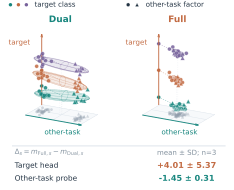
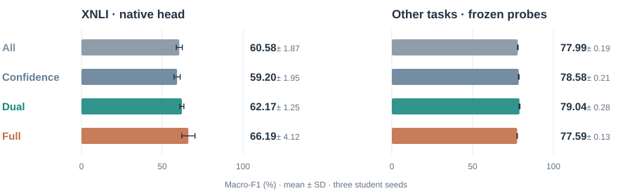
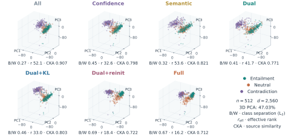

Research project · working manuscript
Selective Adaptation under Noisy Supervision:Separating Task Specialization from Representation Transfer
Better target predictions need not imply more transferable representations. We study where selection, attention anchoring, and head reinitialization direct adaptation.

+5.60± 4.91
Full vs All · XNLI native head
Qwen, staged 600 · paired Macro-F1 points (n=3)+0.46± 0.16
Dual vs Confidence · cross-task probes
Qwen, staged 600 · paired Macro-F1 points (n=3)78% lower
Dual+KL vs Dual · final-layer attention JS
XLM-R/XNLI, seed 17, 16 matched inputs01 / Matched readouts
One model. Different endpoints.
Full leads the longer-budget adapted-head mean; Dual leads cross-task transfer. Full’s gain over All is positive in two of three seeds. Dual’s transfer gain over Confidence is positive in all three.

02 / Controlled interventions
Select support.
Anchor structure.
Redirect updates.
ui = min{Fc(ci), Fs(si)}
ℒFull = ℒselected CE + λ ℒattention KL
Dual retains 60% of target inputs using confidence and frozen semantic support. Full adds teacher-to-student attention KL and one task-head reset. The teacher and gate stay fixed.
A selected-gradient decomposition separates support shift from pseudo-label error. Local propositions describe attention curvature and head-mediated feature updates, connecting each intervention to a distinct mechanism.
03 / Representation evidence
Geometry makes specialization visible.

Evaluation spans two model families, four general classification tasks, and original Korean aspect sentiment experiments. Native heads, fresh in-task probes, and other-task transfer resolve different operating regimes; geometric concentration alone does not establish transferable information.
Explore configurations and reproduction instructions